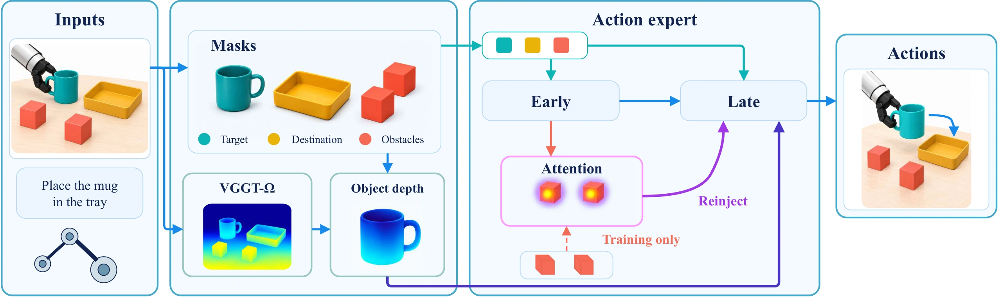
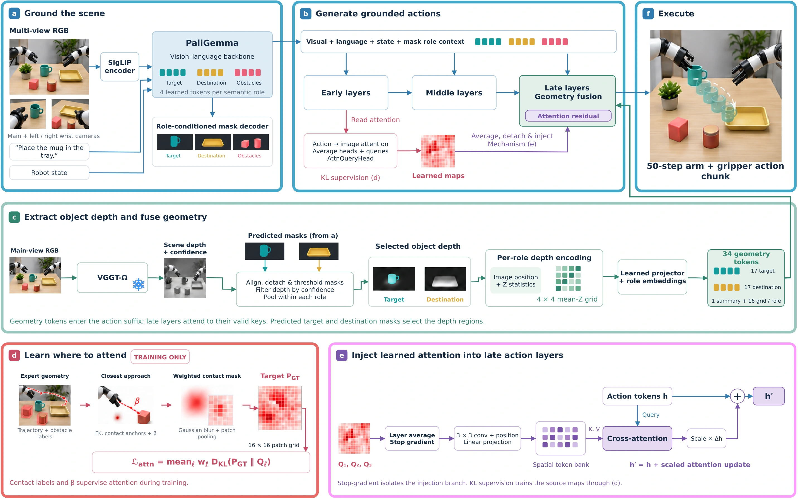

Ground the scene
An auxiliary semantic grounding task predicts role-specific masks for the target object, destination region, and obstacles.
Vision · Language · Action
Code and dataset will be released upon acceptance.
The idea
Explicit scene understanding. Grounded actions.
MOSAIC gives pretrained VLA policies explicit cues about the target, destination, and surrounding obstacles, helping guide manipulation in cluttered scenes.

Research summary
Vision-Language-Action (VLA) models have demonstrated strong performance in robotic manipulation, yet most rely primarily on 2D visual observations and language instructions, leaving scene geometry and obstacle relationships to be inferred implicitly. This limitation is particularly problematic in cluttered environments, where small spatial errors can lead to unintended contacts or collisions.
We propose MOSAIC, a modular spatial- and obstacle-aware framework that can be integrated with pretrained VLA policies to improve object-level scene understanding and action generation. Our method augments the VLA backbone with an auxiliary semantic grounding task that predicts role-specific masks for the target object, destination region, and surrounding obstacles. We further combine the target and destination masks with depth estimated from 3D scene reconstruction to construct role-specific geometric tokens that are injected directly into the action expert.
In addition, we propose obstacle-aware attention supervision that emphasizes obstacles near the robot body during task execution. The resulting attention features are subsequently injected into later action-expert layers to further guide action generation. Together, these components provide explicit semantic, geometric, and obstacle-aware cues while preserving the underlying pretrained VLA architecture.
We evaluate our framework on pretrained VLA model using the RoboPRO benchmark, including visual perturbation tests, and further validate it on real-world manipulation tasks. MOSAIC improves the success rate by 5.1% in cluttered scenes, and by 9.7% under visual perturbations, with gains of up to 25.0% in the most challenging environment. We will release our code and dataset upon acceptance.
Inside MOSAIC
Add semantic, geometric, and obstacle-aware information while preserving the underlying pretrained VLA architecture.
An auxiliary semantic grounding task predicts role-specific masks for the target object, destination region, and obstacles.
Target and destination masks select reconstructed scene depth, creating role-specific geometric tokens for the action expert.
Training supervision emphasizes obstacles near the robot body. Learned attention features are injected into later action-expert layers.

MOSAIC in motion
Real-world execution, benchmark comparisons, and a closer look at what the policy attends to.
Evaluation highlights
Built on π0.5 and evaluated across four RoboPRO environments, with qualitative real-world manipulation experiments. Visual robustness tests vary lighting, blur, and pixel shifts.
Success rate: 52.7% → 57.8%
Success rate: 65.2% → 74.9%
Success rate: 51.7% → 76.7%
pp = percentage points, compared with the RoboPRO-finetuned π0.5 baseline (Tables I–II). In cluttered scenes, collision-free success improves from 39.7% to 41.3%, while collision rate increases from 39.7% to 44.8%.